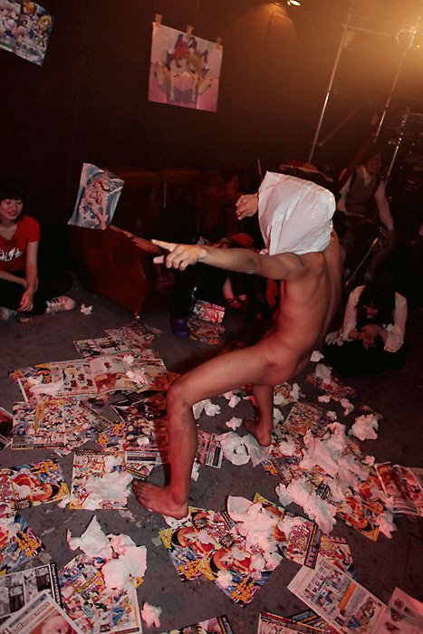
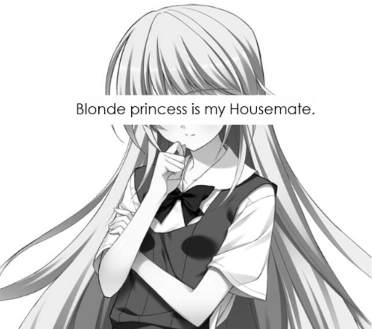
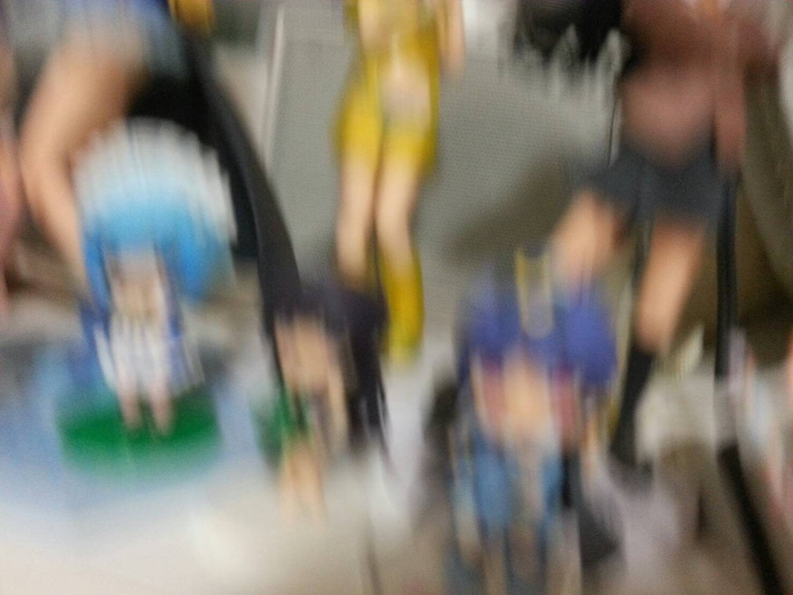

アクト | Kusoikore 3
2008年、ネギま！実写版ドラマの出来の悪さにブチ切れていた当時中学生の『尿道出産』(Noise)と、音楽はジャパレゲしか聴いたことがなかった隣のクラスの『Hiroyuki』(Drum)の2人で結成。大阪梅田や地元の公園で路上ライブを開始。 同年11月、メタルバンドと勘違いしてオファーしてきたライブハウスで初ライブ。観客は2人。 同年12月、関係者向け非売品デモCD-R(「ナインティナインのオールナイトニッポン」の録音をそのまま収録。)を配布開始。レコード会社や音楽事務所、漫画雑誌の新人賞に応募するが全て落選する。
2009年2月、同級生の田原くんをネタにしたコンセプトシングル「田原よさっさと死ね」を学校内で無料配布。 2009年3月、日本橋ストリートフェスタ関係のイベントに出演。会場内を全裸で走り回りイベントが中止となる。 2009年4月、ノイズアルバム「1」を限定300枚発売。3ヶ月で完売。 同年8月、中学の同級生だった『Taka』(Guitar)加入。同月に初の自主企画を開催。機材をぶっ壊し１０万の請求がくるも華麗にトンズラこく。 同年12月、同じく中学の同級生だった『Mece』(Bass)と『淫者ハットリくん』(Ninja)が加入。 CDRの7インチシングル「Mugifar EP」に尿道出産が客演で参加。
2010年3月、『踊ってばかりの国』のレコ発に出演。遊戯王カードとタイムカード、オナニーのテッシュや拭いた使用済みのトイレットペーパーをばら撒き、小便とゲロを撒き散らしてPA席に弁当を投げ込んでそのまま外に出て木に登る。出番後、「やっていいことと悪いことがある」と怒り狂い詰め寄るライブハウス店長に対し尿道出産が「表現の自由だ。弾圧をやめろ」と反発。３０分に渡る大喧嘩のすえ、無事出入り禁止。 2010年6月、尿道出産から乳首を舐められるのを嫌がった淫者ハットリくんが脱退。
2011年10月、「F.M.W 2011」に出演。100人以上が詰めかけ入場規制となるも、1曲目で泥酔した客同士が喧嘩をおっ始めライブ中止となる。
（2009～2011年は意味不明なパフォーマンスが仇となり多くのライブハウスを出入り禁止となり、後期には出演自体を断るライブハウスも増えた。関西アンダーグラウンドを中心に「オシリペンペンズ」「N'夙川ボーイズ」「踊ってばかりの国」「キュウソネコカミ」「THE原爆オナニーズ」などと共演。また「空きっ腹に酒」の田中幸輝氏や「流血ブリザード」と共同イベントを開催。）
2012年1月、本格的にライブ活動をしたいメンバーと、ライブを飲み会の延長線と考えている尿道出産が対立し、活動休止。 2012年7月、活動再開。 2012年10月、Hiroyukiが突然の失踪。急遽MECEがドラムを担当し、サポートベースに地元の後輩『Kazu』(ベース歴２分)が参加し、十三ファンダンゴでライブ。 2012年12月、将来に不安を感じたTaka、Meceが脱退。またも活動休止となる。
2014年、成人式で再会した中学の同級生である『アレキサンダー東条英機』(Vocal)『ジャンボ松本』(MC)『伊藤かな恵』(歌い手)が加入。 同年8月、パンクバンド「GEZAN」の企画に出演。初の東京ライブだったが共演バンドの内輪感とノリの軽さに憤慨し、持ち時間20分のところを歯磨きだけして2分で帰る。 同年12月、東条英機以外のメンバーが真剣に音楽をしたいと考え始めたため解雇。二人組ユニットとなる。
2015年1月、中学の同級生だった『オタク大王』(ダンサー)が加入。 2015年5月、オタク大王が尼崎の本サロで童貞を捨てたことが発覚、即日解雇。 2015年8月、「やわらかハードコアまつり東京編」への出演が決定していたが、前日に東条英機が入院し出演キャンセル。
2016年現在、ライブオファーが全く来ないため地元の公園でライブ活動を継続中。
物乞亭糞丸
ワタクソは正真正銘の糞ですので
曲も作らないし、機材も使いません。
音楽を聴いてみたいです！

フロッピー・ディスコ、チョコレート・ディスコとスロッピング・グリッスルのマッシュコア開拓史に名を残すちぢちぢ太。その正体は.mid、トリムにこだわる愛知のハタチ。エロゲンガーに憧れ農業大学を出るも、幾三養成学科に全敗。ガガガSSp2Pのモザイク.wavを The End Of シン・ゴジラの模造品にいんふみあいくみあい、コラ松本！あ、ああああ、あ、あ、アンコをぬいてもとっても大好きなライドをハイド、ジキル、グニャグニャ。フライヤに名前がないのは彼がアノニマスだからだ！アーメンはあんま使わないけど555時間漬け込んだガバガバキックESP、ガッツ松本のアナル野郎！パン振り合い組合でんぱ組.co.jp、BJ カタストロフ。アー写は偽 RDJ となるものの、RDC レコーズからは１枚のスプリット、スイス、アメリカなんかからもたしかサイコなんとかっていうRDCのくそじじいとスプリット兄弟・アルバムリリースのミドリのボクっ娘、ゴトウマリよりも誠の応酬、押収されたゾウのフンはクソイコアとなり中田氏大百科をバンドごと恐喝、喝を下しあいくみあいに制裁を、君の名はが無料で観れるウェブサイトは国際問題化、現代社会に生きる生きた屍フロウ。昔は「フロウ」がついた不老。キャンディキャンディキャンディキャンディキャンディ・・・チュチュチュチュベボー！ハンダボー！吉田洗車 Vs V//VM Vs メカペギラ、アナログバイナル303ロボッツコントロールアコースティック・ドラックス。俺らの旅路は続く。寄生獣 完
あとtomato-chan https://soundcloud.com/tmt-c
金髪のお嬢様と同居している、元解離性同一性障害患者。最近また発症して同期を嫌うようになった。 クソを生産してるのに本職はミニマルテクノDJなのよさ。出ていいのか。膣内に出して。
佐藤心 佐城雪美
